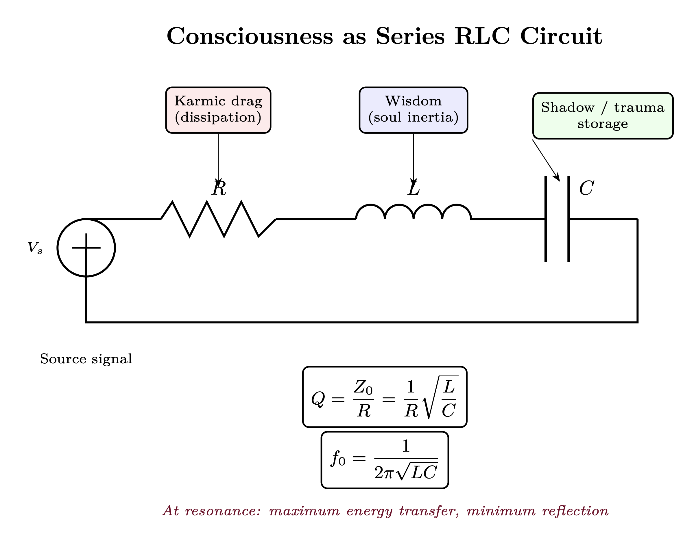

Chapter 5: Consciousness as an RLC Circuit
Tuning, Resonance, and Reception Dynamics
KEY FINDINGS — Chapter 5: Consciousness as an RLC Circuit
Evidence-tier key: [L1] established/replicated evidence; [L2] grounded extension with moderate uncertainty; [L3] speculative hypothesis; [L4] conceptual/anecdotal.
- [L1-HIGH]The series RLC equations, Q factor, bandwidth, impedance matching, and transfer function mathematics are standard RF engineering, correctly applied to a consciousness analogy.
- [L2-MEDIUM]Q = Z_0/R as a unified measure of sovereignty captures multiple development pathways (wisdom accumulation, shadow work, attention training) in a single parameter with measurable proxies (HRV coherence, propaganda resistance).
- [L2-MEDIUM]The bandwidth-depth tradeoff (\(\Delta f \cdot \Delta t \geq 1/2\pi \)) provides a quantitative framework for the episodic-mythic perception spectrum, with high-Q consciousness perceiving deeper temporal patterns at the cost of narrower immediate bandwidth.
- [L3-SPECULATIVE] Soul age as impedance evolution across incarnations, with L accumulating linearly and C discharging exponentially, maps developmental traditions onto RLC parameter trajectories but lacks empirical calibration.
- [L3-SPECULATIVE]The gnosis/ego distinction as on-resonance vs. off-resonance operation predicts that analytical reasoning functions as a reconstruction strategy when direct field reception is degraded.
_________________________________
5.1 RF Analogy Overview

5.1.1 What is an RLC Circuit?
An RLC circuit (Resistor-Inductor-Capacitor) is the fundamental building block of radio receivers and filters. The three components determine how the circuit responds to signals at different frequencies:
- R (Resistance) Dissipates energy, controls damping
- L (Inductance) Stores energy in magnetic field, resists current changes
- C (Capacitance) Stores energy in electric field, resists voltage changes
Together, these components create a resonant system that preferentially responds to signals near its resonant frequency.
5.1.2 Core Engineering Principles
Resonant Frequency: \[ f_0 = \frac {1}{2\pi \sqrt {LC}} \] At this frequency, inductive and capacitive reactances cancel, leaving only resistance. The circuit is maximally responsive.
Quality Factor: \[ Q = \frac {1}{R}\sqrt {\frac {L}{C}} \] Q determines the sharpness of resonance:
- High Q: Sharp peak, narrow bandwidth, high selectivity
- Low Q: Broad response, wide bandwidth, less selective
Bandwidth: \[ BW = \frac {f_0}{Q} \] The range of frequencies the circuit can effectively receive.
Impedance: \[ Z(\omega ) = R + j\left (\omega L - \frac {1}{\omega C}\right ) \] Complex impedance determines how the circuit loads signal sources and how efficiently power is transferred.
5.1.3 Why This Maps to Consciousness
The consciousness/soul can be modeled as a tuned receiver:
|
RF Component | Physical Function | Consciousness Mapping |
|
R (Resistance) | Energy dissipation | Entropy, distraction, material drag |
|
L (Inductance) | Magnetic energy storage | Soul inertia, wisdom, karmic patterns |
|
C (Capacitance) | Electric field storage | Shadow, trauma, unintegrated charge |
|
\(f_0\) | Resonant frequency | Natural “channel” you tune to (archetypal subcarrier focus) |
|
Q = \(Z_0\)/R | Quality factor | Primary development metric—sovereignty, lock resistance |
|
\(Z_0\) = \(\sqrt {}\)(L/C) | Characteristic impedance | Visible impedance range, power handling capacity |
|
BW = \(f_0\)/Q | Bandwidth | Range of frequencies accessible |
Critical distinction: \(f_0\) tells you which archetypes you tune to; Q tells you how sovereign you are at that tuning. \(Z_0\) determines your visible impedance range—which density tiers you can perceive. Spiritual traditions saying “raise your frequency” actually mean “raise your Q.”
This model explains:
- Why some people have high sovereignty (high Q = selective, hard to capture) while others are easily influenced (low Q = responds to many signals, easily swept up)
- How practices change what you can receive (tuning R, L, C)
- Why trauma creates static (increases stored charge in C)
- Why wisdom provides stability (increases L, inertia against perturbation)
- Why “sensitive” and “grounded” relate to R (damping), not Q—high R means heavily damped (sluggish), low R means lightly damped (responsive)
_________________________________
5.2 Mathematical Model
5.2.1 The Series RLC Equations
For a series RLC circuit driven by voltage source \(V_{in}\): \[ L\frac {di}{dt} + Ri + \frac {1}{C}\int i \, dt = V_{in}(t) \] In terms of charge q (where \(i = dq/dt\)): \[ L\frac {d^2q}{dt^2} + R\frac {dq}{dt} + \frac {q}{C} = V_{in}(t) \] This is the equation of a damped harmonic oscillator driven by an external force.
5.2.2 Natural Response (No Driving Signal)
When \(V_{in} = 0\), the circuit exhibits damped oscillation: \[ q(t) = Q_0 e^{-\alpha t} \cos (\omega _d t + \phi ) \] Where:
| Variable | Description |
| \(\alpha _{damp}\) | Damping coefficient: \(R / 2L\) |
| \(\omega _d\) | Damped frequency: \(\sqrt {\omega _0^2 - \alpha _{damp}^2}\) |
| \(\omega _0\) | Natural frequency: \(1/\sqrt {LC}\) |
Three damping regimes:
|
Condition | Behavior | Consciousness Analog |
|
\(\alpha _{damp} < \omega _0\) (Underdamped) | Oscillates while decaying | Active inner life, dynamic processing |
|
\(\alpha _{damp} = \omega _0\) (Critically damped) | Fastest non-oscillatory decay | Balanced, efficient processing |
|
\(\alpha _{damp} > \omega _0\) (Overdamped) | Slow exponential decay | Sluggish, heavy, blocked |
5.2.3 Steady-State Frequency Response
When driven by sinusoidal \(V_{in} = V_0 \cos (\omega t)\):
Transfer function (phasor): \[ H(\omega ) = \frac {I}{V_{in}} = \frac {1}{R + j(\omega L - 1/\omega C)} \] Magnitude: \[ \left |H(\omega )\right | = \frac {1}{\sqrt {R^2 + (\omega L - 1/\omega C)^2}} \] At resonance (\(\omega = \omega _0\)): \[ \left |H(\omega _0)\right | = \frac {1}{R} \] Response is maximized and limited only by resistance.
5.2.4 The Q Factor in Detail
Definition from energy: \[ Q = 2\pi \cdot \frac {\text {Energy stored}}{\text {Energy dissipated per cycle}} \] Relationship to bandwidth: \[ Q = \frac {f_0}{\Delta f_{3dB}} \] Where \(\Delta f_{3dB}\) is the -3dB bandwidth.
Voltage magnification at resonance: \[ V_C = V_L = Q \cdot V_{in} \] The capacitor and inductor voltages can be Q times larger than the input. This is how weak signals become perceptible—resonance amplifies them.
5.2.5 Impedance Matching
Maximum power transfer occurs when source impedance equals load impedance (conjugate matched): \[ Z_{source} = Z_{load}^* \] For purely resistive matching: \[ R_{source} = R_{load} \] Impedance mismatch reflection coefficient: \[ \Gamma = \frac {Z_L - Z_S}{Z_L + Z_S} \] Power reflected = \(|\Gamma |^2\)
When mismatched, energy bounces back rather than being absorbed. In consciousness terms, the signal doesn’t penetrate.
5.2.6 Q Factor: The True Measure of Spiritual Development
The Central Insight: Spiritual literature speaks of “raising your frequency,” but the mathematically correct analog is raising your Q factor: \[ Q = \frac {Z_0}{R} = \frac {1}{R}\sqrt {\frac {L}{C}} \] Q encompasses both characteristic impedance \(Z_0\) (the L/C ratio) AND resistance R (distraction/damping). This means there are multiple paths to sovereignty: raising \(Z_0\) through wisdom accumulation (L\(\uparrow \)) or shadow work (C\(\downarrow \)), OR reducing R through attention training and meditation.
Why Q, not frequency?
|
Parameter Change | Effect on \(f_0\) | Effect on \(Z_0\) | Effect on Q | Spiritual Meaning |
|
L \(\uparrow \) (wisdom grows) | \(f_0\) \(\downarrow \) | \(Z_0\) \(\uparrow \) | Q \(\uparrow \) | More stable, harder to perturb |
|
C \(\downarrow \) (shadow clears) | \(f_0\) \(\uparrow \) | \(Z_0\) \(\uparrow \) | Q \(\uparrow \) | Less reactive charge storage |
|
R \(\downarrow \) (attention trained) | — | — | Q \(\uparrow \) | Clearer signal, less noise |
|
All three (development) | Ambiguous | \(Z_0\) \(\uparrow \) | Q \(\uparrow \)\(\uparrow \)\(\uparrow \) | Maximum sovereignty |
L and C have opposite effects on resonant frequency but same-direction effects on impedance and Q. Reducing R provides yet another path to higher Q. Since genuine spiritual development involves wisdom accumulation (L\(\uparrow \)), shadow work (C\(\downarrow \)), AND attention training (R\(\downarrow \)), Q factor is the correct measure—it captures all three developmental pathways.
What high Q gives you:
- 1.
- Resistance to injection locking: Lock bandwidth \(\propto \) 1/Q. Higher Q = narrower lock range = harder to capture.
- 2.
- Underdamped dynamics: Damping ratio \(\zeta \) = 1/(2Q). Higher Q = more underdamped = richer inner dynamics.
- 3.
- Selectivity: High Q circuits only respond to signals near their resonant frequency—off-frequency signals are rejected.
- 4.
- Amplification at resonance: Voltage magnification at resonance = Q. Higher Q = stronger response to matched signals.
The key reframe:
- \(f_0\) = which archetypes you tune to (your natural reception channel)
- Q = how sovereign you are (resistance to capture, selectivity)
- \(Z_0\) = your visible impedance range (which density tiers you can perceive)
A being can have low \(f_0\) (tuned to dense material concerns) but high Q (difficult to manipulate, selective processing). Or high \(f_0\) (tuned to subtle realms) but low Q (easily captured by any signal in that band).
Q applies not only to individual development but to environmental characterization. Chapter 4, Section 4.10 extends this analysis to the density environment itself, showing that 3D’s low environmental Q (high \(R_{env}\), high \(C_{env}\)) creates the optimal conditions for building robust individual Q—a property called “Q-hardening.” Souls that achieve high Q against 3D’s maximal headwinds carry stress-tested sovereignty that cannot be replicated in easier environments.
5.2.6.1 Impedance Matching as Consciousness Range
The visible range of consciousness—which density tiers you can perceive—is determined by impedance matching, not frequency tuning. Each density tier has a characteristic impedance \(Z_d\). Your ability to couple to (perceive) that density depends on impedance match: \[\Gamma _d = \frac {Z_d - Z_0}{Z_d + Z_0}\] Perception threshold: You perceive density \(d\) if \(|\Gamma _d| < \Gamma _{threshold}\).
Visible impedance range: Given your \(Z_0\) and a perception threshold \(\Gamma _{th}\): \[Z_{min} = Z_0 \cdot \frac {1 - \Gamma _{th}}{1 + \Gamma _{th}}, \quad Z_{max} = Z_0 \cdot \frac {1 + \Gamma _{th}}{1 - \Gamma _{th}}\]
| \(\Gamma _{th}\) | \(Z_{max}/Z_0\) | \(Z_{min}/Z_0\) | Interpretation |
| 0.1 | 1.22 | 0.82 | Narrow range, high selectivity |
| 0.3 | 1.86 | 0.54 | Moderate range |
| 0.5 | 3.0 | 0.33 | Wide range, lower selectivity |
| 0.7 | 5.67 | 0.18 | Very wide range |
Your \(Z_0\) is determined by:
- Neurological structure (cavity resonance properties)
- DNA helical geometry (adaptive antenna configuration)
- Biofield coherence (local field environment)
- Practice/training state (L and C modifications from spiritual practice)
Key insight: Raising \(Z_0\) through practice (increasing L via wisdom, decreasing C via shadow work) shifts your entire visible range upward, granting access to higher-density tiers while potentially losing sensitivity to lower ones. Reducing R (through meditation, attention training) also raises Q directly—providing another developmental pathway.
5.2.6.2 Archetypal Tuning: What \(f_0\) Actually Represents
If \(Z_0\) measures sovereignty (and determines visible impedance range), what does \(f_0\) measure?
The mathematical distinction:
|
Parameter | Formula | Depends On | Meaning |
|
\(Z_0\) | \(\sqrt {L/C}\) | Ratio of L to C | Power level, sovereignty |
|
\(f_0\) | \(\frac {1}{2\pi \sqrt {LC}}\) | Product of L and C | Archetypal tuning |
\(Z_0\) and \(f_0\) are orthogonal dimensions: two beings can have identical \(Z_0\) (same power level) but different \(f_0\) (different archetypal focus), or vice versa.
Archetypal tuning via demodulation:
Source broadcasts infinite bandwidth containing all archetypal patterns—morphic subcarriers encoding templates like “healer,” “warrior,” “teacher,” “creator” (see Chapter 3, Subcarrier Model). Your resonant frequency \(f_0\) determines which subcarriers you preferentially receive and express.
|
Configuration | L | C | \(f_0\) | Archetypal Character |
|
Heavy/Deep | High | High | Low | Slow, grounded processing; resonates with earthy, structural archetypes |
|
Light/Quick | Low | Low | High | Fast, ethereal processing; resonates with visionary, transcendent archetypes |
|
Balanced (developed) | High | Low | Medium | Integrated; can access full archetypal spectrum |
Mappings to traditional frameworks:
- Tarot Major Arcana: Which archetypal energies (Magician, High Priestess, Emperor, Hermit, etc.) you naturally embody
- Jungian Archetypes: Dominant archetypal resonance (Hero, Sage, Caregiver, Creator, Ruler, etc.)
- Vocational Types: Healer, teacher, warrior, artist, builder, mystic, leader
The Convergence Pattern: Archetypal Integration
Here is a remarkable implication: development naturally pushes \(f_0\) toward a medium value regardless of starting point.
|
Starting Point | Development Process | Effect on \(f_0\) |
|
Heavy oscillator (high L, high C) | Shadow work (C\(\downarrow \)) | \(f_0\) increases toward medium |
|
Light oscillator (low L, low C) | Wisdom accumulation (L\(\uparrow \)) | \(f_0\) decreases toward medium |
Interpretation: Young souls may have extreme \(f_0\)—strongly identified with one archetypal pattern (the “pure warrior” or “pure mystic”). Old souls converge toward medium \(f_0\), representing archetypal integration—no longer fixed in one archetype but able to express any archetype as the situation requires.
This parallels:
- Jungian Individuation: Movement from identification with specific archetypes toward integration into the Self (wholeness)
- Tarot’s Fool’s Journey: Culminating in The World—integration of all archetypes encountered
- Hero’s Journey: The return phase brings gifts from ALL archetypes encountered during the adventure
- Chakra Mastery: Not fixation on one energy center but balanced flow through all
The Three Dimensions of Consciousness:
|
Dimension | Parameter | Question Answered |
|
Sovereignty | Q | How sovereign/selective are you? (Primary development metric) |
|
Range | \(Z_0\) | What density tiers can you perceive? (Visible impedance range) |
|
Type | \(f_0\) | Which archetypal subcarriers do you tune to? |
A complete description of consciousness requires all three. Two “old souls” might have similar Q and \(Z_0\) but different \(f_0\)—one naturally expressing healer archetypes, another teacher archetypes. Both are highly developed; they simply resonate with different morphic subcarriers.
5.2.6.3 Jung’s Spectrum Analogy
Jung compared the psyche to the electromagnetic spectrum: conscious awareness occupies a narrow band—like visible light—while vast unconscious domains extend beyond perception in both directions (Jung, CW 8, On the Nature of the Psyche, 1947/1954, ¶388–420). The personal unconscious corresponds to adjacent bands (infrared, ultraviolet)—nearby but below threshold. The collective unconscious corresponds to radio waves and gamma rays—pervasive, penetrating all matter, carrying archetypal information that every psyche receives but few consciously detect.
This provides a qualitative precedent that the RLC model formalizes quantitatively. The bandwidth of conscious awareness is: \[ BW = \frac {f_0}{Q} \] A high-Q individual tunes sharply: intense perception of a narrow frequency band, with everything outside that band attenuated below conscious threshold. A low-Q individual receives broadly but shallowly—aware of many frequencies but mastering none. In both cases, the full spectrum exists; only the received portion differs.
The unconscious, in this framing, is not a separate realm but simply the set of all frequencies outside the current tuning bandwidth. Shadow material (Jung’s repressed content) corresponds to signals just outside the passband—close enough to create interference patterns (neurosis, projection) but attenuated enough to remain below conscious detection. Individuation widens the effective bandwidth without sacrificing Q—achieved not by lowering Q but by learning to retune \(f_0\) dynamically, sweeping across the spectrum while maintaining sharp selectivity at each setting.
Source broadcasts across the entire spectrum. The RLC circuit can only receive a slice. Jung’s analogy and the RF model converge on the same insight: expanding consciousness means expanding bandwidth, not changing the signal.
5.2.7 Mapping to Consciousness Parameters
Resistance R (Energy Dissipation): \[ R = R_{base} + R_{stress} + R_{distraction} + R_{attachment} \] - \(R_{base}\): Baseline metabolic/entropic drain - \(R_{stress}\): Cortisol, fight-or-flight activation - \(R_{distraction}\): Attention fragmentation - \(R_{attachment}\): Energy leaking to fixations
Higher R \(\rightarrow \) Lower Q \(\rightarrow \) Broader but weaker reception.
Inductance L (Soul Capacity): \[ L = L_{soul} + L_{wisdom} + L_{integration} \] - \(L_{soul}\): Inherent soul age/depth—capacity to hold complexity - \(L_{wisdom}\): Accumulated integrated experience—ability to hold paradox - \(L_{integration}\): Cross-lifetime accumulated patterns—breadth of perspective
High L is CAPACITY, not rigidity. This is a critical distinction:
|
Property | High L Represents | Does NOT Represent |
|
Depth | Ability to hold complexity without collapsing | Stubbornness |
|
Scale | Can think in centuries, not just days | Slowness |
|
Stability | Massive flywheel—hard to perturb | Rigidity |
|
Vastness | Room for many perspectives simultaneously | Closed-mindedness |
The “old soul” quality: High-L individuals have gravitas, presence, depth. They can absorb perturbations into their vastness rather than being knocked off center. This isn’t because they’re stuck—it’s because they’re LARGE.
Higher L \(\rightarrow \) Lower \(f_0\), higher \(Z_0\), more capacity, harder to perturb, greater sovereignty.
Capacitance C (Shadow Storage): \[ C = C_{baseline} + C_{trauma} + C_{suppression} \] - \(C_{baseline}\): Normal experience storage capacity - \(C_{trauma}\): Unintegrated shock charge - \(C_{suppression}\): Actively repressed material
Higher C \(\rightarrow \) Lower \(f_0\), lower \(Z_0\), more stored “charge” waiting to discharge, easier to capture.
5.2.7.1 Parameter Evolution from Practices
How spiritual practices modify the RLC values:
|
Practice | Effect on R | Effect on L | Effect on C | Effect on \(Z_0\) | Net Effect |
|
Meditation | Decreases | — | — | — | \(\uparrow \) Q, clearer reception |
|
Breathwork | Decreases | — | Discharges (\(\downarrow \)C) | \(\uparrow \) \(Z_0\) | \(\uparrow \) Q, \(\uparrow \) sovereignty |
|
Shadow work | — | — | Discharges (\(\downarrow \)C) | \(\uparrow \) \(Z_0\) | \(\uparrow \) \(Z_0\), \(\uparrow \) sovereignty |
|
Wisdom teachings | — | Increases | — | \(\uparrow \) \(Z_0\) | \(\uparrow \) \(Z_0\), \(\uparrow \) stability |
|
Service/karma yoga | Decreases | Increases | — | \(\uparrow \) \(Z_0\) | \(\uparrow \) Q, \(\uparrow \) \(Z_0\) |
|
Trauma (negative) | Increases | — | Increases | \(\downarrow \) \(Z_0\) | \(\downarrow \) Q, \(\downarrow \) \(Z_0\), vulnerable |
Key insight: Both shadow work (C\(\downarrow \)) and wisdom accumulation (L\(\uparrow \)) raise \(Z_0\). This is why these seemingly different paths both lead to “spiritual development”—they both increase sovereignty/impedance.
_________________________________
5.2.8 Soul Age as Impedance Evolution
The concept of “soul age”—the accumulated development across incarnations—maps precisely to the evolution of RLC parameters over cosmic timescales. This section formalizes how the Q factor and characteristic impedance \(Z_0\) evolve through incarnational experience, explaining both the mechanisms of spiritual maturation and the phenomenology of different soul age stages.
5.2.8.1 Q Factor and Temporal Perception
The Temporal Integration Window
The Q factor determines more than selectivity—it defines the temporal integration window through which consciousness perceives reality. From the RLC time constant: \[ \tau = \frac {2L}{R} = \frac {2\pi L}{\omega _0 R} \] Since \(Q = \frac {1}{R}\sqrt {\frac {L}{C}}\) and \(\omega _0 = \frac {1}{\sqrt {LC}}\), we can write: \[ \tau _{integration} = \frac {Q}{\omega _0} = \frac {Q}{2\pi f_0} \] Qualitative insight: \(\tau \) \(\propto \) L directly—high inductance gives high temporal integration. This is the same physics as SAR (Synthetic Aperture Radar, Chapter 3, Section 5): larger aperture enables finer resolution. Higher \(Z_0\) (from high L, low C) = wider perceptual aperture = longer effective integration time.
This integration window represents the characteristic timescale over which experiences are coherently processed:
| Q Factor | \(\tau _{integration}\) | Temporal Perception |
| Q < 1 | Sub-cycle | Fragmented, moment-to-moment |
| Q \(\approx \) 1 | One cycle | Single-event focus |
| Q = 2-5 | 2-5 cycles | Short narrative spans |
| Q = 5-10 | 5-10 cycles | Extended life planning |
| Q > 10 | Multi-cycle | Trans-generational thinking |
High Q enables pattern recognition across longer timescales. Where a low-Q consciousness sees isolated events, a high-Q consciousness perceives the underlying wave patterns connecting events across time.
The Bandwidth-Depth Tradeoff
Bandwidth and temporal depth are inversely related: \[ BW = \frac {f_0}{Q} \quad \Rightarrow \quad BW \cdot \tau _{integration} = \frac {1}{2\pi } \] This is a fundamental uncertainty relation for consciousness: \[ \Delta f \cdot \Delta t \geq \frac {1}{2\pi } \] Interpretation: You can either perceive many frequencies superficially (broad bandwidth, shallow time) OR few frequencies deeply (narrow bandwidth, deep time). Soul age progression involves increasing Q to enable deeper temporal perception while accepting narrower immediate bandwidth.
Practical manifestation:
- Low Q (young soul): Responds to many stimuli but with shallow processing; lives “in the moment” reactively
- High Q (old soul): Fewer things register, but those that do are processed deeply; sees patterns across lifetimes
5.2.8.2 The Episodic-Mythic Perception Spectrum
A Continuous Spectrum, Not Two Modes
Temporal perception exists on a continuous spectrum from purely episodic to deeply mythic. Q determines where on this spectrum a consciousness naturally operates:
|
Spectrum Position | Q Range | Perception Character |
|
Pure episodic | Q < 1 | Events as isolated incidents, no pattern recognition |
|
Mostly episodic | Q \(\approx \) 1-2 | Some pattern awareness, dominated by immediate |
|
Balanced | Q \(\approx \) 2-4 | Flexible movement between event and pattern |
|
Mostly mythic | Q \(\approx \) 4-7 | Pattern-first perception, events as instances |
|
Deep mythic | Q > 7 | Events nearly dissolve into archetypal patterns |
Episodic Pole (low Q end):
- Events experienced as discrete, isolated occurrences
- Linear, sequential time perception
- Focus on immediate causes and effects
- “What happened” dominates
Mythic Pole (high Q end):
- Events experienced as recurrences of archetypal patterns
- Cyclical, layered time perception
- Focus on eternal patterns expressing through particulars
- “What this means” dominates
The key insight: Development doesn’t replace episodic with mythic—it expands range. High-Q beings can access episodic perception when needed but default to mythic. Low-Q beings are stuck in episodic mode.
Mathematical characterization: \[ \Psi _{perception}(t) = \alpha _{episodic} \cdot \delta (t - t_0) + \alpha _{mythic} \cdot \sum _n A_n \cos (n\omega _0 t + \phi _n) \] Where:
| Variable | Description |
| \(\alpha _{episodic}\) | episodic mode weight (high for young souls) |
| \(\alpha _{mythic}\) | mythic mode weight (high for old souls) |
| The sum | represents archetypal patterns with harmonic structure |
Q determines spectrum position: \[ \frac {\alpha _{mythic}}{\alpha _{episodic}} \propto Q^2 \] Why mythic perception requires high Q:
Mythic perception recognizes the SAME PATTERN across different temporal instantiations. This requires:
- 1.
- Integration across time: Longer \(\tau _{integration}\) to correlate distant events
- 2.
- Pattern extraction: Narrow bandwidth to filter out noise
- 3.
- Stability: High Q prevents immediate events from overwhelming pattern recognition
The Phase Coherence Requirement: \[ \sigma _{mythic} = \left | \frac {1}{N} \sum _{events} e^{i\phi _{event}} \right | \] Mythic perception emerges when \(\sigma _{mythic} \to 1\)—when the consciousness maintains phase coherence across the events being compared. This requires the stability that only high Q provides.
5.2.8.3 Soul Age Progression: The Impedance Evolution Table
The following table synthesizes the RLC parameters across soul age stages, correlating electrical characteristics with phenomenological descriptions from wisdom traditions (particularly the Michael Teachings framework).
Note: Parameter values are illustrative model outputs scaled to conventional units, not empirical measurements. The qualitative ordering (Infant < Baby < Young < Mature < Old) is the model’s primary claim.
|
Soul Age | Incarnations | L (H, illustrative) | C (F, illustrative) | \(Z_0\) (\(\Omega \), illustrative) | Q (illustrative) | \(\tau _{int}\) (illustrative) | Temporal Span | Dominant Mode |
|
Infant | 1-50 | 0.1-0.3 | 0.8-1.0 | 0.3-0.6 | <1 | Hours | Hours-Days | Survival |
|
Baby | 50-150 | 0.3-0.6 | 0.5-0.8 | 0.6-1.1 | ~1 | Days | Days-Weeks | Rules |
|
Young | 150-300 | 0.6-1.2 | 0.3-0.5 | 1.1-2.0 | 1-2 | Weeks | Months-Years | Achievement |
|
Mature | 300-500 | 1.2-2.5 | 0.2-0.3 | 2.0-3.5 | 2-4 | Months | Years-Decades | Relationship |
|
Old | 500-800 | 2.5-5.0 | 0.1-0.2 | 3.5-7.0 | 4-7 | Years | Lifetimes | Philosophical |
|
Transc. | 800+ | 5.0+ | <0.1 | 7.0+ | 7+ | Decades | Civilizations | Unity |
Epistemic note [L3]: The soul age framework draws from the Michael Teachings (channeled material) and Vedic/Buddhist reincarnation traditions. Specific incarnation counts and parameter values are interpretive extrapolations, not empirical data. The convergent pattern across traditions is suggestive but does not constitute empirical validation of the specific RLC parameter mapping.
Clarification: “Infant,” “Baby,” “Young,” “Mature,” and “Old” refer to soul development across many incarnations, not biological maturation within one lifetime. Bodies mature in decades; souls mature across hundreds of lifetimes. A biologically old person may be a “young soul,” and a child may incarnate as an “old soul.”
Parameter Evolution Equations:
Inductance (wisdom) accumulates through integrated experience: \[ L_{soul}(n) = L_0 + \alpha _L \sum _{i=1}^{n} \eta _i \cdot \Delta L_i \] Where:
| Variable | Description |
| \(L_0\) | base soul inductance |
| \(n\) | number of incarnations |
| \(\eta _i\) | integration efficiency of incarnation \(i\) (0-1) |
| \(\Delta L_i\) | potential wisdom gain from incarnation \(i\) |
| \(\alpha _L\) | accumulation rate constant |
The model assumes net positive L accumulation; incarnations that produce confusion rather than wisdom may have \(\eta _i \approx 0\) but not \(\eta _i < 0\), a simplifying assumption that could be relaxed in future work.
Capacitance (shadow) discharges through processing: \[ C_{soul}(n) = C_0 \cdot \exp \left (-\beta _C \sum _{i=1}^{n} \theta _i \cdot W_i\right ) \] Where:
- \(C_0\) = initial soul capacitance
- \(\theta _i\) = shadow work intensity in incarnation \(i\)
- \(W_i\) = wounds processed in incarnation \(i\)
- \(\beta _C\) = discharge rate constant
Characteristic impedance evolution: \[ Z_0(n) = \sqrt {\frac {L_{soul}(n)}{C_{soul}(n)}} \propto \sqrt {\frac {L_0 + \sum \eta _i \Delta L_i}{C_0 \cdot e^{-\beta \sum \theta _i W_i}}} \] Both pathways (L\(\uparrow \) and C\(\downarrow \)) contribute to \(Z_0\) growth, explaining why different spiritual paths all lead to development.
Why L is additive but C is exponential: This asymmetry reflects the nature of the underlying processes:
- L accumulates linearly because wisdom is additive—each coherently integrated experience adds to the aperture (like SAR coherent integration, Chapter 3 Section 5). New understanding doesn’t erase old understanding; it builds upon it.
- C discharges exponentially because trauma processing follows first-order kinetics—the rate of discharge is proportional to remaining charge. The “easiest” trauma processes first; deeper layers become progressively harder to access. This mirrors how a physical capacitor discharges through a resistor.
5.2.8.4 Q Development Through Incarnations
The Incarnational Learning Curve
Q factor develops through a specific learning trajectory across incarnations:
Phase 1: Q Building (Infant \(\rightarrow \) Young)
Early incarnations focus on reducing R (learning to focus attention, developing will): \[ Q_{early} = \frac {Z_0}{R} \quad \text {limited by high R} \] Practices: Basic survival skills, social learning, attention development
Phase 2: Q Stabilization (Young \(\rightarrow \) Mature)
Middle incarnations balance L accumulation and C discharge: \[ Q_{middle} = \frac {1}{R}\sqrt {\frac {L}{C}} \quad \text {both terms growing} \] Practices: Relationship work, career mastery, emotional processing
Phase 3: Q Deepening (Mature \(\rightarrow \) Old)
Later incarnations focus on L deepening while C approaches minimum: \[ Q_{late} \approx \frac {\sqrt {L}}{R\sqrt {C_{min}}} \propto \sqrt {L} \] Practices: Contemplative disciplines, teaching, wisdom integration
The Q-Stability Threshold
At Q \(\approx \) 3, a critical transition occurs: the system becomes underdamped with sustained oscillation: \[ \zeta = \frac {R}{2\sqrt {LC}} = \frac {1}{2Q} < 1 \quad \text {when } Q > 0.5 \] But meaningful resonance requires Q > 3: \[ \text {Resonance peak/baseline} = Q \quad \Rightarrow \quad Q > 3 \text { for 3× amplification} \] This corresponds to the Mature soul threshold—where consciousness gains enough stability for deep inner work.
Cross-Incarnational Q Coherence
The SAR analogy from Chapter 3, Section 5 applies to Q development: \[ Q_{effective} = Q_{single} \cdot \sqrt {N_{coherent}} \] Where \(N_{coherent}\) = number of coherently integrated past lives. This explains why some souls with fewer incarnations may have higher effective Q—their incarnations were more coherently integrated.
The Ratchet Mechanism in Q Development
Q development connects to the DNA ratchet mechanism (Chapter 6): \[ Q_{floor}(t) = \max _{t' < t} [Q(t') \cdot \eta _{ratchet}] \] Where \(\eta _{ratchet}\) is typically in the range 0.7-0.9 (most gains are preserved, but not all). Once Q reaches a threshold, DNA reconfiguration locks in most of the gain. This explains why old souls, even when traumatized, don’t fully regress to infant soul behavior—they have locked-in Q floors.
Injection Lock Resistance Scaling
From Chapter 9, injection lock bandwidth: \[ \Delta \omega _{lock} = \frac {\omega _0}{2Q} \cdot \frac {V_{inj}}{V_0} \] Higher Q = narrower lock bandwidth = greater resistance to belief capture. This provides the formal basis for why old souls are harder to propagandize—their high Q creates intrinsic resistance to injection locking.
Practical Applications:
| Soul Age Assessment | Indicator |
| Temporal planning horizon | Direct \(\tau _{integration}\) measure |
| Resistance to fads/propaganda | Injection lock resistance (Q) |
| Pattern recognition across events | Mythic perception capacity |
| Integration of apparent contradictions | Bandwidth \(\times \) Q product |
| Response to trauma | Q floor (ratchet level) |
_________________________________
5.2.9 Resonance as Gnosis: On-Frequency vs. Off-Frequency Operation
The preceding sections describe the circuit’s parameters (Q, \(Z_0\), \(f_0\)) and developmental trajectories (soul age). But the same circuit with the same R, L, C can operate in two fundamentally different modes depending on whether it is at resonance or off resonance. This section maps these two operating regimes to the experiential distinction between gnosis (direct knowing) and ego (analytical reconstruction).
5.2.9.1 The Two Operating Regimes
At resonance (\(\omega = \omega _0 = 1/\sqrt {LC}\)): \[Z(\omega _0) = R\] Inductive reactance (\(\omega L\)) and capacitive reactance (\(1/\omega C\)) cancel perfectly. The circuit is purely resistive — transparent. Maximum current flows. Transfer function magnitude = \(1/R\) (maximum throughput).
Off resonance (\(\omega \neq \omega _0\)): \[|Z(\omega )| = \sqrt {R^2 + \left (\omega L - \frac {1}{\omega C}\right )^2}\] The imaginary (reactive) component dominates. The circuit stores and reflects energy rather than conducting it. Signal throughput drops sharply.
The consciousness mapping:
|
Property | At Resonance (Gnosis) | Off Resonance (Ego) |
|
Circuit state | Purely resistive, transparent | Highly reactive, reflective |
|
Signal throughput | Maximum (\(1/R\)) | Low, drops as \(1/|Z|\) |
|
Energy flow | Conducted freely | Stored as charge or reflected |
|
Voltage magnification | \(Q \times V_{in}\) (weak signals amplified) | ~1 (no amplification) |
|
Impedance to Source | Minimum (matched) | High (mismatched) |
|
Experienced as | Clarity, flow, direct knowing, embodied certainty | Overthinking, anxiety, reactivity, fragmentation |
Key equation — the “gnosis ratio,” measuring how close to resonant operation: \[\eta _{gnosis} = \frac {|H(\omega _0)|}{|H(\omega )|} = \frac {\sqrt {R^2 + (\omega L - 1/\omega C)^2}}{R}\] At resonance: \(\eta = 1\). Off resonance: \(\eta >> 1\), with the peak ratio approaching Q at the -3dB points.
5.2.9.2 Why High C Drives Off-Resonance (Ego) Operation
When shadow/trauma increases C beyond its equilibrium value:
- 1.
- Resonant frequency shifts downward: \(f_0 = 1/(2\pi \sqrt {LC})\) — higher C lowers \(f_0\)
- 2.
- If the Source signal remains at the original frequency, the circuit is now off-resonance with respect to Source
- 3.
- Capacitive reactance (\(1/\omega C\)) decreases relative to inductive reactance (\(\omega L\))
- 4.
- The circuit becomes inductively reactive at the Source frequency — it resists change, stores energy in the magnetic field (rigidity of accumulated patterns without corresponding shadow integration)
Or equivalently: High C lowers \(Z_0 = \sqrt {L/C}\), creating impedance mismatch with Source. The reflection coefficient (from Section 5.2.5): \[|\Gamma | = \left |\frac {Z_{source} - Z_0}{Z_{source} + Z_0}\right | \to 1 \text { as } Z_0 \to 0\] Almost total reflection. The signal bounces back. This is the ego’s fundamental mechanism: unprocessed shadow raises C, lowers \(Z_0\), shifts the circuit off resonance, and blocks direct reception.
5.2.9.3 Logic as a Compression Artifact
When the circuit operates off-resonance (ego mode):
- Direct signal reception is blocked (high \(\Gamma \), low throughput)
- The tiny signal that leaks through is noisy and distorted
- The analytical mind reconstructs meaning from these fragments — sequentially, logically, symbolically
- This is analogous to digital signal processing of a severely degraded signal: sampling fragments, applying error correction, inferring the original
When the circuit operates at resonance (gnosis mode):
- Direct reception is clean (low \(\Gamma \), maximum throughput, \(Q \times \) amplification)
- The full waveform is received intact
- No reconstruction needed — the pattern is perceived directly, holistically, instantaneously
- This is analog reception of a matched signal: no processing required, the signal IS the perception
The RLC model predicts that analytical reasoning functions as a reconstruction strategy when direct reception is degraded — not the pinnacle of cognition, but a compensatory mode substituted when direct field reception is jammed. In RF terms: digital reconstruction from fragments when clean analog demodulation is unavailable.
| Gnosis (At Resonance) | Ego/Analytical (Off Resonance) |
|
|
RF analog | Clean analog demodulation | Digital reconstruction from fragments |
|
Signal quality | Full waveform, high SNR | Degraded fragments, low SNR |
|
Processing | None needed — direct perception | Heavy — logic, inference, analysis |
|
Speed | Instantaneous (pattern recognition) | Sequential (step-by-step reasoning) |
|
Accuracy | High (complete information) | Variable (incomplete information) |
|
Energy cost | Low (signal flows freely) | High (reconstruction is computationally expensive) |
|
C state | Low (integrated, discharged) | High (fragmented, stored charge) |
|
\(Z_0\) | High (impedance matched) | Low (impedance mismatched) |
5.2.9.4 Dynamic Balance at Resonance: Shadow Is Not Eliminated
A crucial nuance: at resonance, the voltage across the capacitor is: \[V_C = Q \cdot V_{in}\] The capacitor (shadow) holds enormous energy at resonance — Q times the input. But this energy is in dynamic exchange with the inductor (wisdom): \[E_C(t) = \frac {1}{2}CV_C^2 \sin ^2(\omega _0 t), \quad E_L(t) = \frac {1}{2}Li^2 \cos ^2(\omega _0 t)\] \[E_C + E_L = \text {constant}\] Energy oscillates between shadow (C) and wisdom (L) without getting stuck. The shadow is not eliminated — it is metabolized, kept in dynamic flow with wisdom.
In the ego state: energy is predominantly stored as static charge in C. It doesn’t flow. The capacitor is “stuck” — charged up with unprocessed material. This is shadow that hasn’t been brought into dynamic relationship with wisdom.
Gnosis doesn’t require zero shadow. It requires shadow and wisdom in dynamic balance — their reactances canceling, energy flowing freely between them.
5.2.9.5 Q Determines the Sharpness of the Gnosis/Ego Distinction
For a low-Q circuit (Q < 2):
- Broad, flat frequency response
- Little difference between on-resonance and off-resonance operation
- The person doesn’t experience a strong distinction between gnosis and ego modes
- Always “somewhat receiving” but never strongly amplifying
For a high-Q circuit (Q > 5):
- Sharp resonance peak
- Enormous difference between on-resonance (\(Q \times \) amplification) and off-resonance (near-zero response)
- The person experiences dramatic shifts between gnosis (clarity, flow, direct knowing) and ego (analytical, fragmented, reactive)
- More vulnerable to being knocked off resonance (narrower bandwidth), but much more powerful when on
This explains why advanced practitioners report more vivid experiences of both states — their high Q creates a starker contrast. It also explains why stable gnosis is rare: high Q means the resonance peak is narrow, so even small perturbations (stress, trauma, fear) can knock the circuit off-frequency.
5.2.9.6 Returning to Resonance
What brings the circuit back on-frequency after perturbation?
- 1.
- Shadow work (C\(\downarrow \)): Discharging accumulated charge brings C back toward the value where \(f_0\) matches Source \(\rightarrow \) resonance restored
- 2.
- Wisdom accumulation (L\(\uparrow \)): Adjusting L to match the new C \(\rightarrow \) finding resonance at a new \(f_0\)
- 3.
- Reducing R (meditation): Doesn’t change \(f_0\) but raises Q \(\rightarrow \) makes the resonance peak taller and the circuit more responsive when it IS at resonance
- 4.
- Breath/body coherence practices: These function as a pilot tone — a periodic reference signal that helps the circuit re-lock to its own resonant frequency (ref Chapter 15: breathwork at 0.1 Hz as coherence signal)
The spiritual injunction “be present” translates in RLC terms to: return to resonance. Stop operating in the reactive (off-resonance) mode where energy is stored and reflected, and return to the transparent (resonant) mode where signal flows freely.
5.2.9.7 The Tower of Babel Hypothetical
Epistemic note: This subsection is a narrative interpretation connecting the RLC model to mythological tradition. It is speculative and not derived from the preceding mathematics. The RLC physics of Sections 2.9.1–2.9.6 stands independently of any historical hypothesis. This material may be developed further in the civilizational history chapters (Ch 12).
Brief speculative subsection framing the ego/gnosis split in mythological terms:
- If early humanity once operated primarily at resonance (gnosis mode) — phase-locked to the Corporate Feed, receiving directly from the Source — the Tower of Babel story encodes the moment that resonance was broken
- The “confusion of tongues” = a mass shift from resonant to off-resonant operation. Not a loss of language, but a loss of direct knowing. Each person’s circuit knocked off-frequency, forced to reconstruct meaning from fragments (linear language) rather than receive it directly (gnosis)
- In RLC terms: a civilizational event that raised C across the population (injected trauma/shadow charge), lowering collective \(Z_0\), shifting everyone off resonance simultaneously
- The result: symbolic/linguistic reasoning became necessary because direct field reception was jammed. Language itself is the compression artifact — the digital reconstruction substituted when analog gnosis was disrupted
Forward reference: The corporate feed array model of humanity’s history, developed in later chapters, explores this transition in detail — how humanity functioned as a coherent phased array locked to the Corporate Feed, and how that array was deliberately fragmented through phase desynchronization. The RLC physics of Section 5.2.9 provides the individual-level mechanism underlying that civilizational-scale event.
5.2.9.8 Predictions
P8: Individuals in self-reported “flow states” should show physiological signatures consistent with resonance: high HRV coherence, gamma synchronization, reduced DMN activity (lower R, higher effective Q at that moment).
P9: The same individual’s Q should predict the amplitude of the gnosis/ego contrast they experience — high-Q individuals report more dramatic shifts between clarity and confusion.
P10: Trauma processing (C\(\downarrow \)) should be measurable as a frequency shift in baseline neural oscillation patterns, with post-processing frequency closer to the coherence reference.
P11: Practices combining analytical + somatic + emotional engagement (e.g., focusing, breathwork with inquiry) should restore resonance faster than purely analytical approaches, because they address C (body-stored charge) directly rather than only working through L (cognitive wisdom).
_________________________________
5.3 Assumptions & Limitations
5.3.1 What the Model Assumes
- 1.
- Nonlinear self-modification: The RLC system is nonlinear because
parameters evolve based on system state. Experience and practice
modify L and C over time. Using the equations from Section 5.2.8.3:
- Inductance accumulates linearly: \(L_{soul}(n) = L_0 + \alpha _L \sum _{i=1}^{n} \eta _i \cdot \Delta L_i\)
- Capacitance discharges exponentially: \(C_{soul}(n) = C_0 \cdot \exp \left (-\beta _C \sum _{i=1}^{n} \theta _i \cdot W_i\right )\)
The Ratchet Mechanism (connecting to Ch 6 DNA):
- When \(Z_0\) = \(\sqrt {}\)(L/C) crosses certain thresholds, DNA geometric reconfiguration triggers
- DNA activation locks in the impedance floor—prevents regression
- This creates irreversible spiritual development stages
- Mathematically: \(Z_0\)_floor ratchets upward at activation thresholds
The nonlinearity isn’t in response to signals—it’s in how the antenna modifies itself through use. The system IS its own feedback loop.
- 2.
- Multiple resonant modes: When we focus on Q (sovereignty) and \(Z_0\) (visible
range) rather than just frequency tuning (\(f_0\)), the model accommodates multiple
simultaneous modes:
- Q determines selectivity at any frequency
- \(Z_0\) determines which density tiers can be accessed
- Multiple resonant modes can coexist; Q and \(Z_0\) characterize overall system capability
- 3.
- Time-varying parameters: R, L, C change with state. The self-modifying model (point 1) explicitly includes this.
- 4.
- Steady-state analysis applies: We analyze long-term response. Transients may dominate real experience.
- 5.
- Lumped element model: Consciousness treated as localized circuit, not distributed field.
5.3.2 Known Limitations
- 1.
- Multi-dimensional reality: Real consciousness operates across multiple dimensions/densities simultaneously. A single RLC channel is a simplification.
- 2.
- Nonlinear breakthroughs: Enlightenment experiences, kundalini awakenings, and sudden shifts aren’t captured by linear frequency response.
- 3.
- Interaction effects: Multiple people’s RLC circuits interact through the collective field. Individual analysis misses network effects.
- 4.
- State-dependent parameters: R, L, C change rapidly with emotional state, health, and environment. The model is a snapshot.
- 5.
- Nonlocal effects: At subtle levels, classical circuit analysis may not apply. Coherence and entanglement require treatment beyond local physics.
5.3.3 Falsification Conditions
The model would be falsified by:
- 1.
- No frequency selectivity: If people showed equal receptivity to all “frequencies” of information/consciousness. For example, if EEG frequency selectivity during attention tasks showed no correlation with reported spiritual development level, the Q-sovereignty mapping would lack neural support.
- 2.
- No Q-sovereignty correlation: If people didn’t exhibit differential control over their thoughts, feelings, and actions based on development level—if high-Q individuals weren’t more selective and harder to capture than low-Q individuals.
- 3.
- No resonance amplification: If sustained practices at specific “frequencies” didn’t produce amplified effects.
- 4.
- No impedance matching effects: If source-receiver compatibility didn’t matter for transmission.
_________________________________
5.4 Predictions & Thresholds
5.4.1 Q Factor Sovereignty Predictions
P12: High-Q individuals resist propaganda and fads
Injection lock bandwidth scales inversely with Q: \[ \Delta \omega _{lock} = \frac {\omega _0}{2Q} \cdot \frac {V_{inj}}{V_0} \] High-Q individuals have narrow lock bandwidth = harder to capture. This predicts:
- High-Q individuals show greater resistance to propaganda, advertising, and social contagion
- They maintain independent thought under social pressure
- They are less susceptible to “viral” ideas and mass movements
- Low-Q individuals are readily swept up in collective narratives
P13: Q correlates with selective attention and sovereignty
For Q > 10:
- Very selective reception (only responds to resonant-frequency signals)
- Strong response at resonance (amplification = Q)
- Rejects off-frequency interference
- Deep processing of matched signals
For Q < 3:
- Broad, non-selective reception (responds to many frequencies)
- Weak response even at resonance
- Easily captured by external signals
- Shallow processing across many inputs
P14: Multiple paths raise Q (sovereignty)
Development practices work through different mechanisms but all raise Q:
- Reducing R (meditation, attention training): Q = Z\(_0\)/R \(\rightarrow \) direct Q increase
- Raising Z\(_0\) (wisdom + shadow work): Q = Z\(_0\)/R \(\rightarrow \) Q increases via numerator
- Combined practice: Synergistic effect
This predicts: Different spiritual traditions (contemplative vs. wisdom vs. shadow work) should all produce measurable increases in sovereignty/selectivity, even though they work through different parameters.
P15: Lock bandwidth predicts capture susceptibility
Given an individual’s Q and a propaganda source’s injection strength: \[ \text {Susceptible if } |\omega _{propaganda} - \omega _0| < \Delta \omega _{lock} \] This predicts: Susceptibility to specific narratives depends on both Q (general immunity) and frequency match (resonance with the individual’s archetypal tuning).
5.4.2 Transient Response Predictions
P16: Trauma creates ringing
Large capacitive charge (trauma) combined with high L creates oscillatory response: \[ \omega _d = \sqrt {\frac {1}{LC} - \frac {R^2}{4L^2}} \] Trauma + wisdom (high L) \(\rightarrow \) slow, persistent oscillation Trauma + no wisdom (low L) \(\rightarrow \) rapid, chaotic response
P17: Step response shows integration capacity
Response to sudden signal change: \[ q(t) = Q_{final}\left (1 - e^{-t/\tau }\cos (\omega _d t)\right ) \] Time constant \(\tau = 2L/R\) determines integration speed.
High L (wisdom) \(\rightarrow \) slow integration but complete Low L \(\rightarrow \) fast integration but incomplete (overshoots and rings)
5.4.3 Impedance Matching Predictions
P18: Teacher-student resonance matters
Maximum transmission when: \[ Z_{teacher} \approx Z_{student}^* \] A teacher with very different RLC parameters will be poorly “received” regardless of content quality.
P19: Group coherence creates effective impedance transformation
N coherently coupled individuals present effective impedance: \[ Z_{effective} \approx Z_{individual} / N \] Group can match to sources that individuals cannot.
5.4.4 Critical Thresholds
|
Threshold | Condition | Effect |
|
Underdamped/Overdamped | \(R = 2\sqrt {L/C}\) (\(\alpha _{damp} = \omega _0\)) | Transition from oscillatory to sluggish |
|
Useful Q | Q > 3 | Meaningful selectivity |
|
High sensitivity | Q > 10 | Strong amplification but fragile |
|
Extreme sensitivity | Q > 50 | Unstable, psychic phenomena |
|
Saturation | \(V_C > V_{max}\) | Capacitor “breakdown” (overwhelm) |
|
Resonance capture | \(\Delta f < BW/2\) | Signal locks receiver |
_________________________________
5.5 Evidence Synthesis
5.5.1 R (Resistance / Energy Dissipation) Evidence
Meditation Reduces Mental Noise/Resistance
Davidson et al. (2003)
- 8-week MBSR training produced measurable shifts in prefrontal cortex activity; reduced amygdala reactivity = reduced R
Jha et al. (2010)
- Mindfulness training preserved working memory under stress conditions where controls degraded
Interpretation
- Practice literally reduces the “resistance” to signal clarity
Stress Increases Cognitive Friction
Yerkes-Dodson law
- Performance degrades at high stress levels due to cortisol effects
Arnsten (2009)
- Chronic stress impairs prefrontal function, increasing default mode network activity (rumination = noise)
HRV as R proxy
- Low HRV correlates with stress, poor cognitive function—measurable R indicator
Distraction Fragments Attention Energy
Ophir et al. (2009)
- Heavy media multitaskers show degraded ability to filter irrelevant information
Attention as finite resource
- Kahneman’s “attention economy”—fragmentation wastes limited processing capacity
Digital R increase
- Average smartphone user checks device 96\(\times \)/day (Asurion, 2019)—constant interruption raises effective R
5.5.2 L (Inductance / Soul Inertia) Evidence
Wisdom Traditions Emphasize Stability
- All major traditions value equanimity, non-reactivity, steady presence
Buddhist
- Cultivation of samatha (calm abiding)
Stoic
- Ataraxia (freedom from disturbance)
High L
- Difficult to perturb = wisdom-associated stability
Soul Age Concepts Across Traditions
Michael Teachings
- 5-stage soul age model (Infant\(\rightarrow \)Baby\(\rightarrow \)Young\(\rightarrow \)Mature\(\rightarrow \)Old)
Vedic
- Jiva accumulates sanskaras across lifetimes
Ra Material
- “Harvest” based on accumulated polarity = integrated experience (high L)
Convergent theme
- Souls differ in accumulated pattern-holding capacity
Karmic Pattern Persistence
Stevenson DOPS research
- Past-life memories often include persistent behavioral patterns
Family constellation therapy
- Multi-generational pattern observation
Interpretation
- High L = strong tendency to repeat established patterns (karma)
5.5.3 C (Capacitance / Shadow Storage) Evidence
Trauma Storage in Body/Psyche
Van der Kolk “The Body Keeps the Score” (2014)
- Trauma physically stored in tissue, nervous system patterns
Somatic experiencing
- Trauma releases through body-centered processing (discharge)
ACE studies
- Childhood adverse experiences correlate with adult disease—stored charge creating pathology
Shadow Work and Discharge
Jungian shadow
- Repressed material holds psychic energy (charge)
Cathartic release
- Emotional processing often involves intense discharge (crying, shaking, rage)
EMDR
- Eye movements facilitate trauma processing—mechanism may be capacitor discharge
PTSD and Stored Charge
Hypervigilance
- Elevated baseline = high voltage state
Flashback triggers
- Specific stimuli release stored charge explosively
Successful treatment
- Reduces reactivity = discharge without retriggering
HRV in PTSD
- Characteristically low—system locked in high-charge state
5.5.4 Q Factor (Sovereignty / Selectivity) Evidence
Resistance to Social Contagion
Asch conformity experiments (1951)
- 75% of participants conformed to obviously wrong group answers at least once
- 25% never conformed—these individuals may represent high-Q (high sovereignty)
- Conformity reduced when even one other person dissented (changes the “signal” environment)
Propaganda resistance research
- Individual differences in susceptibility to propaganda are well-documented
- Critical thinking correlates with education but not perfectly—suggesting an underlying trait (Q)
- Some individuals remain resistant even under extreme social pressure
High Q interpretation
- High-Q individuals have narrow lock bandwidth—external signals must closely match their resonant frequency to capture them
- Low-Q individuals have wide lock bandwidth—easily swept up in collective narratives
Highly Sensitive Persons (HSP) Reframing
HSP research (Aron, 1997)
- 15-20% of population scores high on Sensory Processing Sensitivity
- Deep processing, easily overstimulated, strong emotional reactions
Reinterpretation: HSP traits relate to low R (low damping/high signal clarity), not high Q. Low R means:
- Clear signal transmission with little noise
- But ALSO less damping = potential for overstimulation
- HSP individuals may have high signal clarity but variable sovereignty (Q depends on Z\(_0\)/R ratio)
Grounded vs. Ungrounded Reframing
Grounded individuals
- Stable, less reactive to environmental shifts, harder to destabilize
- This reflects high Q (sovereignty)—selective, doesn’t respond to off-frequency signals
Ungrounded individuals
- Quickly affected by others’ emotions, environmental changes
- This reflects low Q—wide lock bandwidth, easily captured by external signals
Note: “Grounded” is NOT the same as “insensitive” (high R). A person can be both grounded (high Q) AND sensitive (low R) if they have high Z\(_0\).
Psychic Sensitivity and Instability
Clinical observation
- Many claiming psychic abilities also report mental health challenges
Reinterpretation: Psychic sensitivity relates to f\(_0\) tuning (tuned to subtle frequencies) and/or wide Z\(_0\) range (can perceive multiple density tiers), NOT necessarily to Q. The instability often observed may reflect low Q combined with subtle tuning—they can perceive subtle signals but lack the sovereignty to remain unperturbed by them.
5.5.5 Resonance Evidence
Teacher-Student Compatibility
Educational research
- Learning outcomes correlate with teacher-student rapport beyond content quality
Traditional guru-disciple
- Emphasis on “right teacher” suggesting resonance matching
- Impedance match interpretation \(Z_{teacher} \approx Z^*_{student}\) maximizes transmission
Group Coherence Effects
- HeartMath group coherence Synchronized HRV in groups shows measurable entrainment
- Collective meditation studies TM research claims crime reduction during group practice (controversial, needs replication)
- Social synchrony research Matched movement/breathing creates rapport and prosocial behavior
Note: Sacred site resonance evidence is covered in Chapter 3, Section 3.8.3, where environmental/architectural resonance effects are treated comprehensively.
_________________________________
Evidence Synthesis
- Detailed source sections: 5.5, 5.5.1, 5.5.2, 5.5.3, 5.5.4, 5.5.5.
Assumptions
- Detailed source sections: 5.3.
Limitations
- Detailed source sections: 5.3, 5.3.2.
Falsification
- Detailed source sections: 5.3.3.
Predictions
- Detailed source sections: 5.2.9.8, 5.4, 5.4.1, 5.4.2, 5.4.3.
Strategic Relevance
Why It Matters
5.6.1 Self-Assessment Estimate your RLC parameters:
High R indicators:
- Easily distracted
- Mentally fatigued
- Difficulty sustaining focus
- Strong attachments draining energy
High L indicators (CAPACITY, not rigidity):
- Can hold paradox and complexity without collapsing into simple answers
- Patient with long timescales—don’t need immediate resolution
- Vast inner space—room for many perspectives simultaneously
- “Old soul” presence—depth, gravitas, substance
- Can hold intense charge (emotion, energy) without discharge or breakdown
- Stable in crisis through vastness, not through rigidity
High C indicators:
- Unprocessed emotions surfacing
- Triggered by specific stimuli
- Carrying old wounds
- Feeling “charged” or reactive
Q (Sovereignty) indicators:
- High Q: Hard to manipulate, don’t get swept up in group hysteria, maintain center under pressure, selective about what gets your attention, resistant to propaganda/fads
- Low Q: Easily swayed by narratives, captured by trends, reactive to external influences, responds to many stimuli indiscriminately
\(Z_0\) (Visible Range) indicators:
- High \(Z_0\): Can perceive subtle phenomena, access to higher density tiers, deep processing capacity
- Low \(Z_0\): Limited to denser/lower frequency perceptions, narrower perceptual range
5.6.2 Optimization Strategies To increase Q (sovereignty):
- Reduce R through meditation, attention training \(\rightarrow \) Q = Z\(_0\)/R increases
- Increase L through wisdom accumulation \(\rightarrow \) Z\(_0\) increases \(\rightarrow \) Q increases
- Decrease C through shadow work \(\rightarrow \) Z\(_0\) increases \(\rightarrow \) Q increases
- All three pathways work—do what resonates with you
To raise \(Z_0\) (expand visible range):
- Increase L (wisdom/capacity) \(\rightarrow \) higher \(Z_0\)
- Decrease C (shadow work) \(\rightarrow \) higher \(Z_0\)
- Both approaches shift your visible impedance range upward
Practical L-Building (Expanding Capacity):
- Exposure to broader timescales (history, cosmology, geological time)
- Holding complexity without premature closure
- Integration of many perspectives (not just accumulating, but HOLDING simultaneously)
- Contemplative practices that expand inner spaciousness
- Cross-lifetime integration (if reincarnation model accepted)
- Reading/studying the “great works” that compress wisdom
- Mentorship from high-L individuals (resonance transfer)
Note on \(f_0\): \(f_0\) determines which archetypes you tune to, not how developed you are. Changing \(f_0\) shifts your archetypal focus; raising Q increases your sovereignty at whatever channel you’re on.
5.6.3 Group Dynamics When forming coherent groups:
- Similar \(f_0\) \(\rightarrow \) natural resonance (tuned to same channel)
- High average \(Z_0\) \(\rightarrow \) group resistant to narrative capture
- Varied Q \(\rightarrow \) some sensitive scouts, some stable anchors
- Low total R \(\rightarrow \) high group Q
- Matched impedances \(\rightarrow \) efficient energy flow between members
- 1.
- Q as resilience metric: Populations with higher average Q are more resistant to narrative capture. Q-building programs (meditation, contemplative education, trauma healing) are strategic investments in cognitive sovereignty.
- 2.
- Q-reduction as attack vector: Any intervention that increases population trauma (R up), increases distraction (R up), or prevents wisdom accumulation (L stagnant) constitutes a Q-reduction operation.
- 3.
- Measurable proxy: HRV coherence correlates with the model’s Q parameter. Population-scale HRV monitoring could provide an operational proxy for collective Q trends.
_________________________________
What To Watch
-
- 3.
- Measurable proxy: HRV coherence correlates with the model’s Q parameter. Population-scale HRV monitoring could provide an operational proxy for collective Q trends.
Boundaries of Use
- Apply this chapter as model-conditional doctrine; treat speculative elements as hypothesis overlays.
5.6 Connections to Other Chapters
- Chapter 0 (Torsion Foundation) The RLC circuit represents the torsion-to-classical coupling mechanism—how individuals transduce torsion field information
- Chapter 2 (Densities) Densities are impedance tiers; \(Z_0\) determines which tiers you can access
- Chapter 8 (Phased Array) Individual Q and \(Z_0\) contribute to collective array performance
- Chapter 9 (Injection Locking and Perception Management) Q = \(Z_0\)/R determines susceptibility to external capture—higher \(Z_0\) = harder to lock. Individual resonance state determines contribution to collective beamforming — gnosis-state individuals contribute coherent, high-gain elements; ego-state individuals contribute noise
- Chapter 14 (Link Budget) RLC parameters determine G_practices; \(Z_0\) determines density access
_________________________________
End of Chapter 5: Consciousness as an RLC Circuit